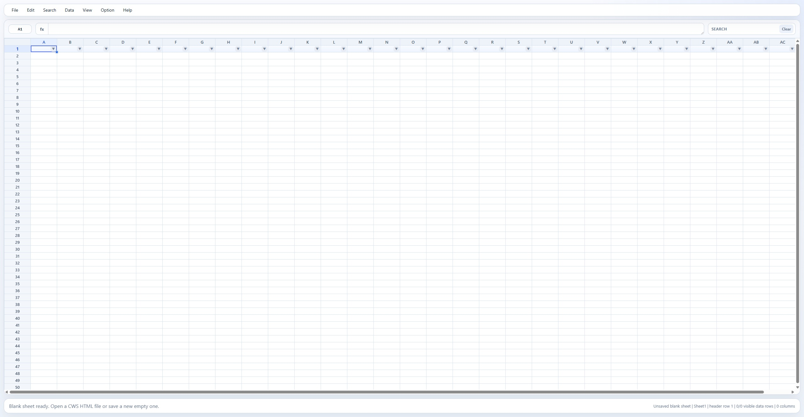

CWS Light Table
A lightweight browser-based editor for simplified single-sheet CWS HTML documents.
About
CWS Light Table is designed for practical table editing rather than full workbook authoring: open a CWS HTML file, edit values in a spreadsheet-like grid, filter and print the current sheet, import common workbook or text-like formats, export plain text formats, and save the result back as a standalone HTML file that opens directly in a browser.
Features
- Open and save standalone CWS HTML
- Import .xlsx, .xlsm, .xls
- Import csv, tsv, txt, json, and xml
- Plain-value grid editing with formula-bar support
- Range, row, column, and whole-sheet selection
- Copy, paste, fill-repeat, undo, and redo
- Find and replace
- Formal header-row control, filtering, and sorting
- Page setup and browser print support
- Export CSV, TSV, and TXT
- Editable grid-size control through Grid Limits
- Standalone saved-file parity for the implemented feature set

Quick Start
Get up and running in two steps.
Requirements: Node.js + npm
npm install
npm run build # rebuild standalone runtime
npm run dev # start dev server
npm run build # rebuild standalone runtime
npm run dev # start dev server
Default: http://127.0.0.1:4173/
Native Format
The native format is CWS HTML: an HTML document that embeds workbook data in a
script#websheet-model element together with the lightweight runtime shell. Saved files open directly in any browser as a fully functional table editor.Open Source
Released under the MIT License. See the LICENSE file for details.